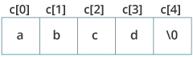

String Strings are actually one-dimensional array of characters terminated by a null character '\0'. Thus a null-terminated string contains the characters that comprise the string followed by a null. Strings are defined as an array of characters. The difference between a character array and a string is the string is terminated with a special character ‘\0’. Declaration of strings: Declaring a string is as simple as declaring a one dimensional array. Syntax: In the above syntax str_name is any name given to the string variable and size is used define the length of the string, i.e the number of characters strings will store. Please keep in mind that there is an extra terminating character which is the Null character (‘\0’) used to indicate termination of string which differs strings from normal character arrays. Initializing a String: A string can be initialized in different ways. We will explain this with the help of an example. Below is an example to declare a string with
name as str and initialize it with “abcd”. example:example:char c[5] = "abcde";Here, we are trying to assign 6 characters (the last character is '\0') to a char array having 5 characters. This is bad and you should never do this. Assigning Values to Strings Arrays and strings are second-class citizens in C; they do not support the assignment operator once it is declared. Example Read String from the user You can use the scanf() function to read a string. The scanf() function reads the sequence of characters until it encounters whitespace (space, newline, tab, etc.). Example 1 Output Even though Dennis Ritchie was entered in the above program, only "Dennis" was stored in the name string. It's because there was a space after Dennis. How to read a line of text? You can use the fgets() function to read a line of string. And, you can use puts() to display the string. Example 2 Output Here, we have used fgets() function to read a string from the user. The sizeof(name) results to 30. Hence, we can take a maximum of 30 characters as input which is the size of the name string. To print the string, we have used puts(name);. Note: The gets() function can also be to take input from the user. However, it is removed from the C standard. It's because gets() allows you to input any length of characters. Hence, there might be a buffer overflow. ||C STRING FUNCTIONS|| 1) String.h header file supports all the string functions in C language. All the string functions are given below. 2) Click on each string function name below for detail description and example programs.
Passing Strings to Functions Strings can be passed to a function in a similar way as arrays. Learn more about passing arrays to a function. Example 3: Passing string to a Function ||Strings and Pointers|| Similar like arrays, string names are "decayed" to pointers. Hence, you can use pointers to manipulate elements of the string. Example 4: Strings and Pointers ||C strlen()|| 1)The strlen() function calculates the length of a given string. 2)The strlen() function takes a string as an argument and returns its length. The returned value is of type size_t (the unsigned integer type). 3)It is defined in the 3) strlen( ) function in C gives the length of the given string. Syntax for strlen( ) function is given below. size_t strlen ( const char * str ); 4) strlen( ) function counts the number of characters in a given string and returns the integer value. 5) It stops counting the character when null character is found. Because, null character indicates the end of the string in C. Description The C library function size_t strlen(const char *str) computes the length of the string str up to, but not .including the terminating null character. Declaration Following is the declaration for strlen() function. Parameters - str − This is the string whose length is to be found. Return Value This function returns the length of string. Example: C strlen() function Output Note: that the strlen() function doesn't count the null character \0 while calculating the length. ||Strcat()|| -strcat( ) function in C language concatenates two given strings. It concatenates source string at the end of destination string. Synatx Example:-strcat ( str2, str1 ); – str1 is concatenated at the end of str2. -strcat ( str1, str2 ); – str2 is concatenated at the end of str1. -As you know, each string in C is ended up with null character (‘\0’). -In strcat( ) operation, null character of destination string is overwritten by source string’s first character and null character is added at the end of new destination string which is created after strcat( ) operation. Description The C library function char *strcat(char *dest, const char *src) appends the string pointed to by src to the end of the string pointed to by dest. Declaration char *strcat(char *dest, const char *src) Parameter 1) dest − This is pointer to the destination array, which should contain a C string, and should be large enough to contain the concatenated resulting string. 2) src − This is the string to be appended. This should not overlap the destination. Return Value This function returns a pointer to the resulting string dest. Example The following example shows the usage of strcat() function. Output Example: strcat() function Output Note: When we use strcat(), the size of the destination string should be large enough to store the resultant string. If not, we will get the segmentation fault error. ||Strcpy()|| - strcpy( ) function copies contents of one string into another string. Syntax: Example -strcpy ( str1, str2) – It copies contents of str2 into str1. -strcpy ( str2, str1) – It copies contents of str1 into str2. - If destination string length is less than source string, entire source string value won’t be copied into destination string. - For example, consider destination string length is 20 and source string length is 30. Then, only 20 characters from source string will be copied into destination string and remaining 10 characters won’t be copied and will be truncated. Description The C library function char *strcpy(char *dest, const char *src) copies the string pointed to, by src to dest. Declaration Following is the declaration for strcpy() function. Parameter 1) dest − This is the pointer to the destination array where the content is to be copied. 2) src − This is the string to be copied. Retuen Value This returns a pointer to the destination string dest. Example The following example shows the usage of strcpy() function. Output ||Strcmp()|| - strcmp( ) function in C compares two given strings and returns zero if they are same. -If length of string1 < string2, it returns < 0 value. If length of string1 > string2, it returns > 0 value. Syntax for strcmp( ) function is given below. int strcmp ( const char * str1, const char * str2 ); - strcmp( ) function is case sensitive. i.e, “A” and “a” are treated as different characters. Description The C library function int strcmp(const char *str1, const char *str2) compares the string pointed to, by str1 to the string pointed to by str2. Declaration Following is the declaration for strcmp() function. Parameter 1) str1 − This is the first string to be compared. 2) str2 − This is the second string to be compared. Return Value This function return values that are as follows − 1) if Return value < 0 then it indicates str1 is less than str2. 2) if Return value > 0 then it indicates str2 is less than str1. 3) if Return value = 0 then it indicates str1 is equal to str2. Example The following example shows the usage of strcmp() function. Output |
     |
||||||||||||||||||||||||||||||||||||||
|
« Previous Next » |
|||||||||||||||||||||||||||||||||||||||